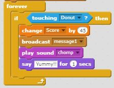
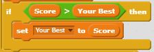
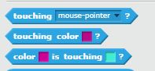

The four core components of coding.
A loop is a sequence of statements that are repeated up to a desired number of times.
Below you will find a snippet of a "for" loop and a snippet of a "while" loop in python.
for count in range(5):
print(a)
a = a - 1
while a < 5:
print(a)
a = a + 1
In Scratch, loops are made with the use of blocks.

This is a paragraph - real-life analogy
A variable is a storage location with a symbolic name that contains a value.
Below you will find what variables look like in python
a = 5
b = 6
c = a + b
Variables in scratch are created by first naming them, and then setting them to a value. You can change your variables by some chosen number and you can also choose to have your variable shown on the screen.

Imagine that you have a value and it is a known value. It is also known that your friend has the same value as you. When your value changes, so does your friend's. This is how variables work, where you would be a variable that equals some amount, and your friend would be a variable that equals you.
Conditionals are features that perform different actions depending on whether a boolean condition evaluates to true or false.
Below you will find what conditionals look like in python
if 34 <= 7:
print("34 is less than or equal to 7!")
When using conditionals in scratch, a condition (e.g. if a sprite is touching something else, if one color is touching another, etc.) is checked to be true or false. Conditionals are used to make loops in both python and scratch.

As humans, we respond to our environmental signals, meaning that we do not always respond to different things the same way. The same goes in code. Sometimes we don't want an action carried out at all times, but only in certain conditions - and that is where conditionals feature in computer programming.
This is a paragraph.